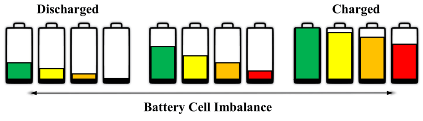
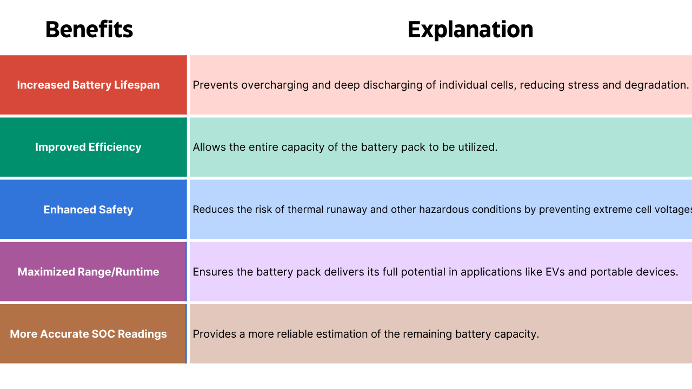
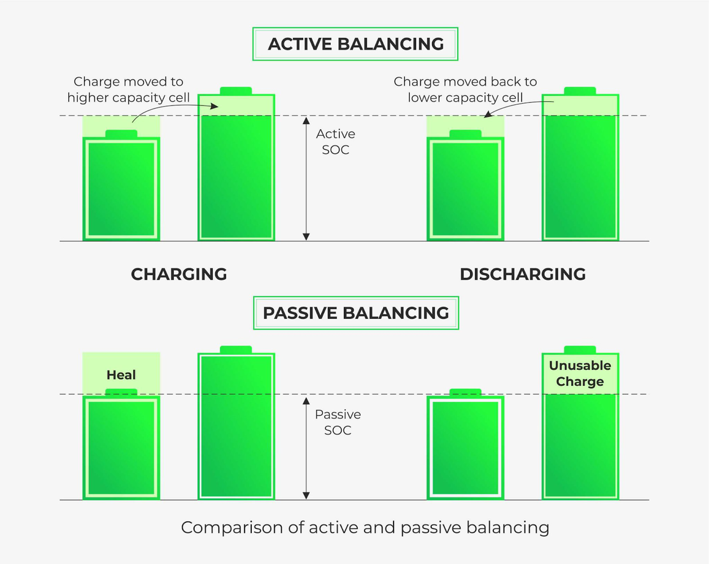
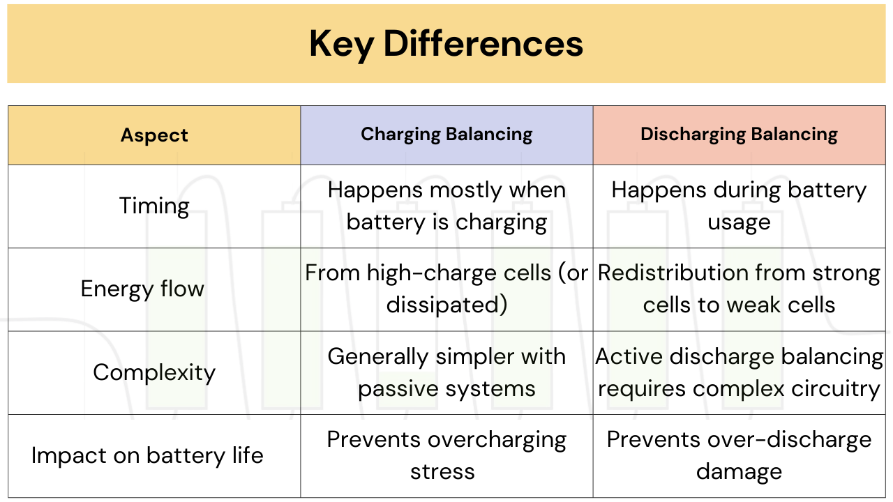
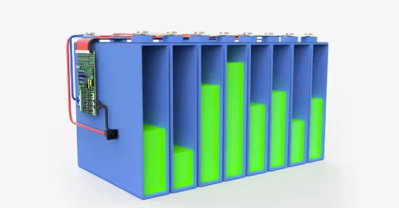

In today’s rapidly evolving world of renewable energy and portable electronic devices, batteries are the cornerstone of progress. However, their performance, safety, and lifespan hinge on one critical factor: cell balancing. Let’s explore how cell balancing during charging and discharging plays a pivotal role in ensuring battery efficiency and reliability.
Basics of Lithium-ion Battery Cells
Before we jump into balancing, let’s quickly understand how lithium-ion cells work. A battery pack contains multiple individual cells connected in series and parallel. Each cell has its own slight variations in capacity, resistance, and voltage. Over time, these differences grow, and that’s where trouble begins if not balanced properly.
What Exactly is Cell Balancing?
Cell balancing is the process of equalizing the voltage or state of charge (SoC) across individual cells in a battery pack. Batteries are made up of multiple cells connected in series or parallel. Variations in cell properties, such as internal resistance, capacity, or aging, can lead to imbalances. These imbalances, if left unchecked, can reduce the overall capacity, efficiency, and safety of the battery pack.

Overcharging can trigger accelerated degradation, potentially leading to thermal runaway and significant safety hazards . Similarly, over-discharging can also inflict damage on cells and limit the amount of usable energy available . By mitigating these risks, cell balancing plays a vital role in enhancing the overall safety of battery packs, reducing the likelihood of thermal events and other hazardous conditions.
Benefits of Cell Balancing

Cell Balancing During Charging
During the charging process, cell balancing ensures that all cells reach their maximum capacity simultaneously. Here’s why it’s critical:
- Preventing Overcharging: Without balancing, cells with higher capacity may overcharge, leading to thermal runaway, swelling, or even fire. Balancing ensures that no cell exceeds its safe voltage limit.
- Maximizing Capacity: Cells with lower capacity may not fully charge if others reach their limit first. Balancing ensures all cells contribute equally, maximizing the total energy stored in the battery.
- Techniques:
Passive Balancing: Excess energy from higher-voltage cells is dissipated as heat using resistors. This is simple but less efficient.
Active Balancing: Energy is redistributed from higher-voltage cells to lower-voltage ones using inductors or capacitors. This is more efficient but complex and costly.

Cell Balancing During Discharging
During discharging, cell balancing ensures that all cells deplete their energy uniformly. Here’s why it’s essential:
- Preventing Deep Discharge: Cells with lower capacity may discharge faster, reaching critically low voltages. This can cause permanent damage or trigger the BMS to shut down the entire pack prematurely.
- Maximizing Usable Energy: Balancing ensures all cells contribute equally, allowing the battery pack to deliver its full energy capacity.
- Techniques: Similar to charging, passive and active balancing methods are used. However, the focus shifts to redistributing or dissipating energy to prevent cells from falling below the minimum voltage threshold.
The primary difference in cell balancing between charging and discharging lies in the objective. During charging, the focus is on preventing overcharge for safety and achieving full capacity, while during discharging, the aim is to prevent over-discharge to maximize energy utilization. While passive balancing can be used in both scenarios, its inefficiency during discharge makes active balancing a more desirable approach for optimizing runtime. Its also worth noting that some BMS algorithms employ bottom balancing, where the equalization of cells is targeted at a low SOC, although this is less common than top balancing.
Key Differences Between Charging and Discharging Balancing
So, what sets them apart?

Charging vs. Discharging: When is Balancing Most Critical?
While both charging and discharging benefit from cell balancing, it is often considered more critical during charging, primarily due to safety concerns . The risk of thermal runaway stemming from overcharging even a single imbalanced cell makes balancing during the charging phase a high priority for ensuring safe operation.
However, balancing during discharge is equally important for maximizing the usable capacity of the battery pack . Premature termination of the discharge cycle due to a single weak cell can significantly reduce the operational time of a device or vehicle, highlighting the performance benefits of balancing during this phase. Some evidence suggests that voltage differences between cells can become more pronounced as the battery pack discharges, particularly at lower SOC levels.
This indicates a potential increased need for balancing towards the end of the discharge phase, although proactively balancing at other stages can help mitigate this. Ultimately, the effectiveness of balancing, whether during charging or discharging, can be influenced by the method used to assess cell imbalance. Balancing based on accurate State of Charge (SOC) estimation is potentially more effective than relying solely on voltage measurements, which can be affected by factors like temperature and cell aging. However, SOC-based balancing often involves more complex algorithms and implementation.
Key Technologies That Enable Cell Balancing
Recent advancements in battery management systems (BMS) have transformed cell balancing:
- Advanced Algorithms: Dynamic balancing algorithms quickly adjust to cell conditions in real-time.
- Wireless Balancing Systems: Newer systems reduce wiring needs and improve battery pack design flexibility.
- Self-Balancing Cells: Innovations in battery chemistry allow cells to balance themselves without external systems.

Conclusion
Cell balancing—whether during charging or discharging—is the unsung hero of battery longevity and safety. While passive methods get the job done for low-cost applications, active balancing takes efficiency and performance to a new level. Whether you’re designing a battery pack for an EV or simply curious about the tech in your phone, understanding cell balancing is like peeking behind the curtain of modern energy storage magic. Take care of your cells, and they’ll take care of you!